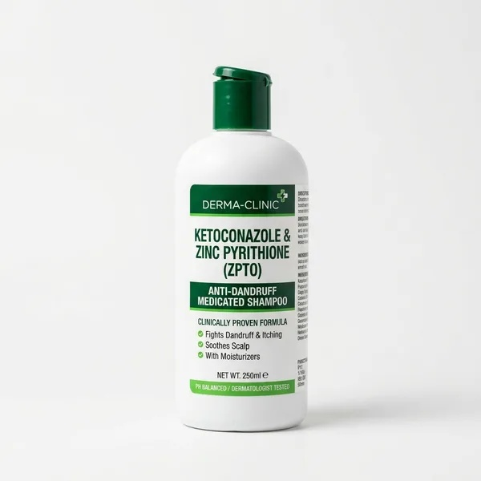
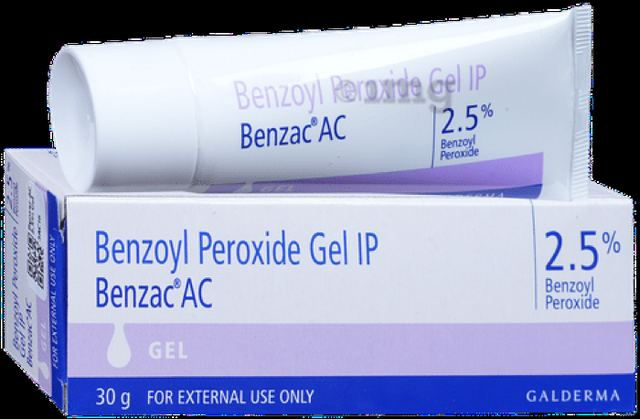
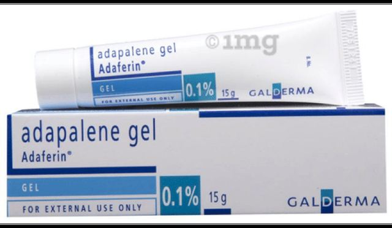
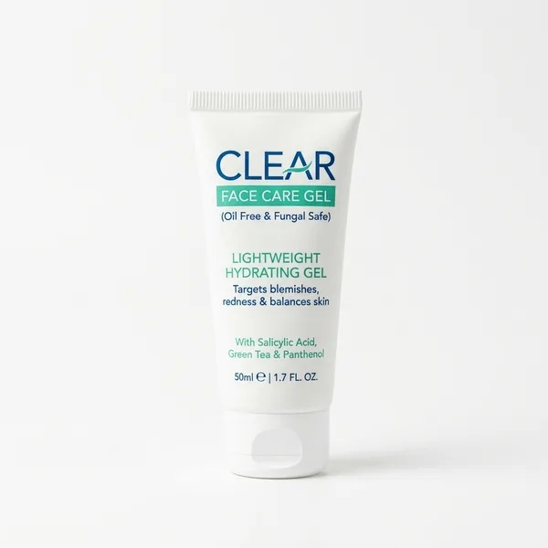

The Medical Forehead Map: What Breakout Zones Mean
Ancient face mapping traditions frequently claimed that forehead acne reflects liver toxicity, gallbladder congestion, or poor digestive health. Clinical dermatology has thoroughly debunked this myth: there is zero anatomical or physiological connection between forehead skin and internal organs [1]. Your digestive tract does not cause forehead pimples.
Instead, modern dermatological science maps the forehead through sebaceous gland concentration and local contact vectors. The frontal forehead contains between 400 and 900 oil glands per square centimeter—one of the highest concentrations on your entire body. When natural sebum mixes with dead skin, friction, or hair products, breakouts form rapidly.
Decoding the 3 Forehead Zones
Look closely at where your forehead bumps cluster. Each zone points directly to a physical, identifiable trigger:
The 4 Hidden Triggers Behind Forehead Breakouts in India
Forehead breakouts in India have distinct cultural and environmental drivers that standard international skincare routines often overlook. Addressing these root vectors stops new bumps before they even start:
The "Champi" Overnight Hair Oil Effect
Generations of Indian households practice deep scalp oiling with coconut, mustard, or almond oil. Leaving thick oils on your scalp overnight allows heavy lipids to seep onto your forehead while you sleep, creating stubborn closed comedones (Pomade Acne) [2].
Dandruff & Malassezia Yeast Migration
If you have dandruff or an itchy scalp, the microscopic fungus Malassezia sheds continuously onto your forehead. The yeast feeds on forehead sebum, releasing inflammatory fatty acids that trigger uniform, itchy bumps known as Pityrosporum Folliculitis [3].
Helmet Straps & Sweat Friction
Daily two-wheeler commutes trap sweat, pollution, and body heat under heavy helmet padding. The constant mechanical rubbing on your forehead damages the protective skin barrier and forces bacteria into open pores—a clinical condition known as Acne Mechanica [5].
Hair Bangs & Styling Wax Occlusion
Fringes and forehead bangs trap hot breath, sweat, and natural scalp sebum directly against your forehead skin. If you also use hair styling gels, waxes, or hairsprays, the occlusive polymers form an impermeable plastic-like barrier over forehead pores.
Clinical Comparison Guide: What Type Do You Have?
Treating fungal forehead bumps with regular bacterial acne creams (or oral antibiotics) can make them flare violently. Conversely, using anti-dandruff shampoo on deep hormonal cysts will not unclog pores. Compare your bumps against this structured clinical breakdown:
Malassezia Folliculitis
Acne Vulgaris
Pomade Acne
Real Pharmacy Treatments That Clear Forehead Bumps
You do not need expensive imported salon treatments. Indian pharmacies carry gold-standard, clinically proven solutions that clear forehead bumps without irritating melanin-rich skin or causing post-inflammatory hyperpigmentation (PIH):

1. Scalpe+ Anti-Dandruff Wash (Ketoconazole 2%)
The first-line clinical weapon against Malassezia fungal breakouts. Rather than just using it on your scalp, work a coin-sized amount into a gentle lather over your forehead and hairline. Leave it on for 3 to 5 minutes before rinsing thoroughly with cool water [4]. Use 3 nights per week.

2. Galderma Benzac AC 2.5% Gel
Water-based micronized Benzoyl Peroxide that penetrates deep into pores to kill C. acnes bacteria within 48 hours. Unlike topical antibiotic gels (such as clindamycin), bacteria cannot build resistance to Benzoyl Peroxide. The 2.5% strength is just as effective as 10% but causes far less peeling on Indian skin.

3. Galderma Adaferin 0.1% Gel (Adapalene)
The gold-standard topical retinoid for ungluing closed forehead whiteheads and preventing new clogged pores. Adapalene speeds up cellular turnover, expelling microcomedones before they turn into red bumps. Apply a tiny pea-sized amount over your entire forehead at night after moisturizer.

4. Sebamed Clear Face Care Gel
Never skip moisturizer on an oily forehead—doing so triggers rebound sebum production. Sebamed Clear Face Care Gel is completely oil-free, fatty-acid-free, and ester-free. It provides lightweight hydration with Hyaluronic Acid, Aloe Vera, and Panthenol without feeding Malassezia yeast.
Watch: Fungal vs Bacterial Forehead Acne Explained
Watch board-certified dermatologists Dr. Shah and Dr. Maxfield break down how to distinguish fungal yeast bumps from ordinary forehead pimples, and why common skincare habits make forehead breakouts worse:
The 3-Step Daily Routine to Clear Forehead Bumps
Consistency is key. Follow this streamlined morning and evening protocol tailored for Indian weather and skin phototypes:
Morning: Protect & Regulate Oil
- Gentle Cleanse: Wash face with a gentle foaming cleanser to remove overnight oil accumulation without stripping the skin barrier.
- Hydrate: Apply a light layer of Sebamed Clear Face Gel or a pure hyaluronic acid water gel to damp skin.
- Matte Sunscreen: Apply a broad-spectrum, non-comedogenic gel sunscreen (SPF 50 / PA+++) to prevent post-acne dark marks.
Evening: Treat & Unclog
- Targeted Wash: On Mon/Wed/Fri, apply Scalpe+ Ketoconazole lather to forehead and hairline for 3 minutes, then rinse. On alternate nights, use a gentle cleanser.
- Active Treatment: Apply a pea-sized amount of Adaferin (Adapalene 0.1%) over the forehead to clear closed bumps, or dab Benzac AC 2.5% directly on red inflamed pimples.
- Seal: Finish with a thin layer of Sebamed Clear Face Gel.
🚿 The Golden Hairline Shower Rule:
Always wash your face LAST in the shower. When rinsing shampoo and hair conditioner, tilt your head backward. After all hair products are rinsed away, wash your forehead with your face cleanser to eliminate any lingering silicone or oil film that clogs hairline pores.
Frequently Asked Questions
Medical Editorial Standards & Evidence
MyMirror Medical Review Guarantee:
All therapeutic guidance on MyMirror is strictly evidence-based, derived from peer-reviewed dermatology literature, and verified by certified dermatologists. We do not accept sponsored placements for prescription pharmaceuticals. If you have questions or feedback, contact our editorial team directly at editorial@mymirror.fit.
Scientific References
- [1] Thiboutot D, et al. New insights into the management of acne: an update from the Global Alliance to Improve Outcomes in Acne. Journal of the American Academy of Dermatology (JAAD). 2009;60(5 Suppl):S1-50.
- [2] Sardana K, et al. Pomade acne and hair oil practices in Indian phototypes: clinical patterns and therapeutic management. Indian Journal of Dermatology (IJD). 2016;61(3):301-306.
- [3] Rubenstein RM, Malerich SA. Malassezia (Pityrosporum) Folliculitis. Journal of Clinical and Aesthetic Dermatology (JCAD). 2014;7(3):37-41.
- [4] Danby FW, et al. A randomized, double-blind, placebo-controlled trial of ketoconazole 2% shampoo in the treatment of dandruff and seborrheic dermatitis. British Journal of Dermatology. 1993;129(3):210-214.
- [5] Basler RS, et al. Acne mechanica in athletes and helmet wearers: Pathogenesis and prevention. Cutis / Cleveland Clinic Dermatology Reports. 2002;69(2):101-104.